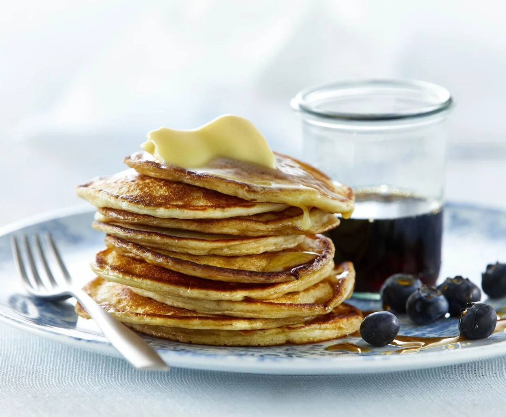

Home
Pancakes

Description
Pancakes are perfect for a Sunday brunch and as a dessert. Bake the small, fluffy pancakes on a regular pan,
a pancake pan, or in a blini pan and serve them hot with delicious toppings like blueberries, maple syrup, and butter.
Those pancakes are easy to make and even easier to enjoy, meaning you will have gobbled up this batch in no time.
Ingredients
Pancakes
- Flour (approx. 5 dl) 300 g
- Milk 3 dl
- Quark 0.3% or Greek inspired yogurt 2 dl
- Eggs 2
- Sugar 2 tbsp
- Coarse salt ¼ tsp
- Baking powder 1½ tsp
- Melted butter 50 g
Served with:
- Maple syrup 1 dl
- Blueberries 100 g
- Butter 50 g
Steps
- Combine flour and milk using a hand mixer until lump-free.
- Add quark, whisked eggs, and the rest of the ingredients to the mixture.
- Add 4 dollops of batter of about ½ dl each onto the pan. Bake the pancakes for about 2 minutes on each side.
- Serve American pancakes with maple syrup, blueberries, and butter.